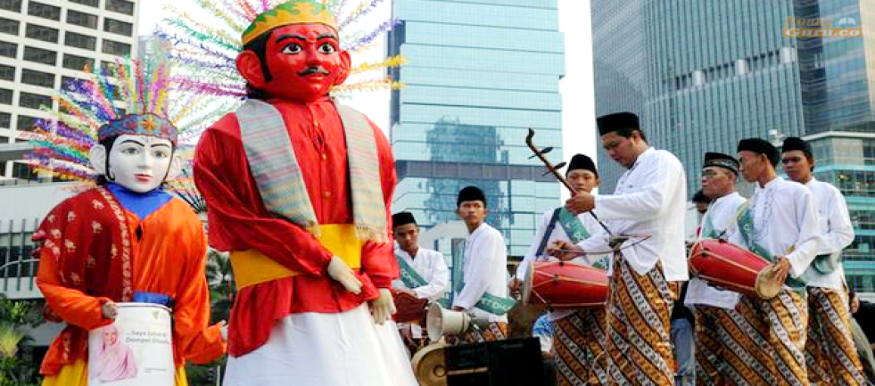

Lihat
❝ Kebudayaan tidak dapat dipertahankan saja, kita harus berusaha merobah dan memajukan. Oleh itu karena kebudayaan sebagai kultur, sebagai barang yang tumbuh, dapat hilang dan bisa maju. ❞
- Mohammad Hatta -
Wakil Presiden Indonesia (1949-1950)